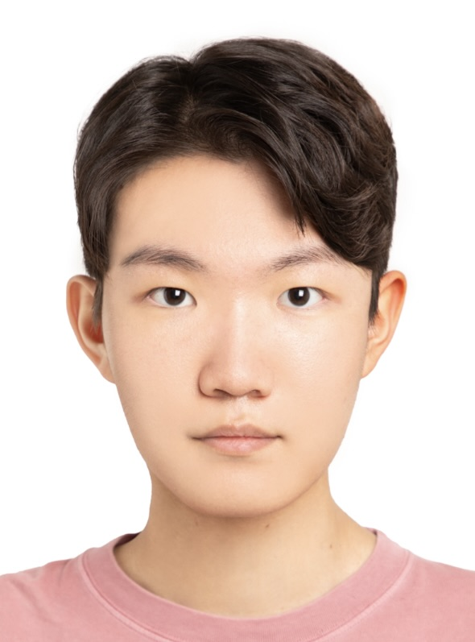

BRIEF BIO: I am an undergraduate student in the School of Electrical Engineering at KAIST (Double major in Physics) and a member of the artificial intelligence club Include and the KAIST Ski Club (KARVE). I am studying with an interest in research on biomedical devices based on computational methodologies such as machine learning and in the field of signal processing.
During my time at science high school, I conducted various research activities combining graph theory and genetics. Specifically, I developed a screening model that rapidly predicts diabetes based on the 5hMC methylation pattern of circulating cell-free DNA (cfDNA). Additionally, under the guidance of Professor Jin-Soo Seo (Yonsei university, Seo Lab), I conducted research using graph perturbation theory to elucidate the correlation between the ApoE4 genotype (a causative gene for Alzheimer's disease) and lipid rafts from a metabolic perspective. Beyond this, I have made diverse attempts to integrate various machine learning techniques, such as GANs and LLMs, into biotechnology research.
I also possess wet lab research experience. During my sophomore year of high school, I conducted research in Professor Yoon's lab at KAIST (Yoon Lab) on elucidating cell-specific transcriptomic dynamics during human brain organoid development. During this research, I had the opportunity to use confocal imaging, which sparked my interest in imaging and processing techniques. Consequently, I am currently pursuing personal studies related to optics.
I'm very interested in audio equipments. Whenever new audio gear or codecs are released, I always attend listening sessions. Beyond that, I often drum on a set and listening to jazz in my spare time as a hobby. And I absolutely love skiing!
𓆝 𓆟 𓆞𓆝 𓆟 𓆞𓆝 𓆟
News
- 2026.07 I started my Undergraduate Research Internship at Intelligence Imaging Integration (I³) Group, advised by Professor Iksung Kang.
- 2026.01 I have joined the executive committee of Include, the KAIST AI academic club.